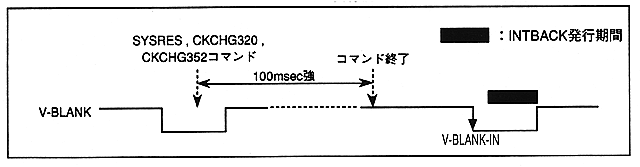

The command execution time takes 100msec or more for the commands above. When issuing an INTBACK command after executing these commands, wait until the next V-BLANK-IN. Figure 2.6 shows the INTBACK command issuance timing after executing the SYSRES, CKCHG320, and CKCHG352 commands.
In addition, please issue SYSRES, CKCHG320, CKCHG352 command timing after V-BLANK-IN after 300μS and before V-BLANK-IN.
Figure 2.6 INTBACK command issue timing after executing SYSRES, CCKHG320, CCKHG352 command
